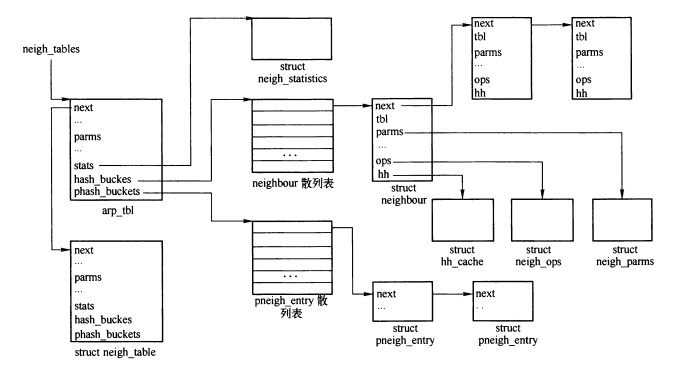
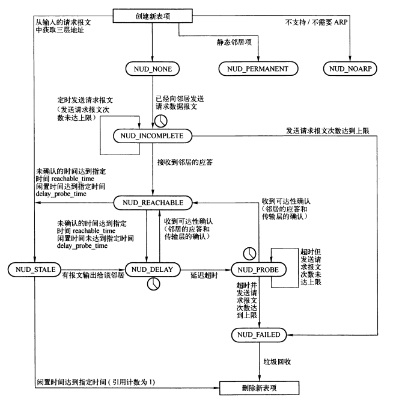
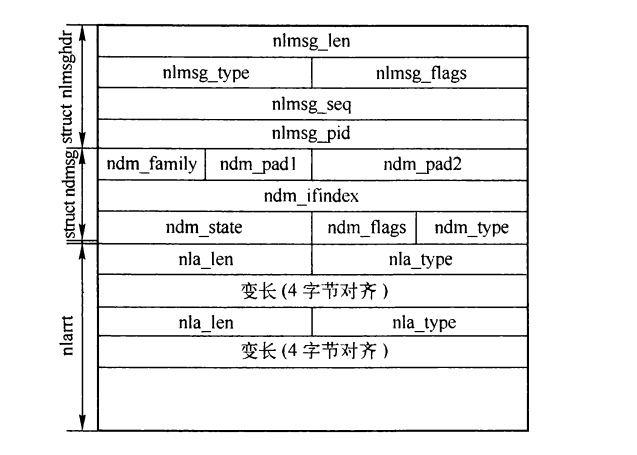

邻居子系统
Table of Contents
1 邻居子系统
邻居是指在同一个IP局域网内的主机，或者邻居之间在三层上仅相隔一跳的距离。
邻居子系统提供了三层协议地址与二层协议地址之间的映射关系，此外还提供二层首部缓存，以加速发送数据包。
发送数据时，首先查找路由，如果找到，则查看邻居表中是否存在相应的映射关系，没有映射关系则新建邻居项; 然后判断邻居项是否为可用状态，如果不可用，则将数据报缓存到发送队列，然后发送请求; 接收到应答后，将邻居项置为可用，并将缓存队列的报文发送出去; 如果指定时间内未收到应答，则将邻居项置为无效。
1.1 系统参数
- mcast_solicit 标识一个多播或广播的邻居项不可达之前，尝试解析的最大次数
- ucast_solicit 请求ARP守护进程前，尝试发送单播探测的最大次数
- retrans_time 重传请求的延迟时间
- base_reachable_time 另据项有效期初始值
- delay_first_probe_time 邻居项过期后，间隔多长时间发送探测
- gc_stale_time 检测邻居项过期的间隔
- unres_qlen 指定每个未解析地址上排队的数据报排队数量
- proxy_qlen 指定允许在proxy-ARP地址上排队的数据报数量
- anycast_delay
- proxy_delay 收到未知代理ARP地址的ARP请求时，延迟响应的时间
- locktime
- gc_interval 垃圾回收的间隔
- gc_thresh1 缓存中最少保持的邻居项条数
- gc_thresh2 缓存中保持的邻居项条数的软上限
- gc_thresh3 缓存中保持的邻居项条数的硬上限
- retrans_time_ms 同retrans_time 单位ms
- base_reachable_time_ms 同base_reachable_time 单位ms
2 邻居子系统结构

Figure 1: 邻居子系统结构
2.1 neigh_table结构
neigh_table结构用来存储与邻居协议相关的参数、功能函数，及邻居散列表。
每个neigh_table结构的实例对应一个邻居协议，所有实例链接在全局链表neigh_tables中。
ARP协议的neigh_table结构的实例是 arp_tbl 。
struct neigh_table { struct neigh_table *next; //用来链接到 neigh_tables 链表中 int family; //所属地址族 int entry_size; //邻居项结构大小 int key_len; //hash函数使用的key长度 __u32 (*hash)(const void *pkey, const struct net_device *); //邻居表项初始化函数， arp为 arp_constructor() int (*constructor)(struct neighbour *); //代理表项初始化函数 int (*pconstructor)(struct pneigh_entry *); void (*pdestructor)(struct pneigh_entry *); //用于处理neigh_table->proxy_queue缓存队列的代理ARP报文 void (*proxy_redo)(struct sk_buff *skb); char *id; //用来分配neighbour结构实例的缓冲池名称 struct neigh_parms parms; //协议相关的可调节参数 /* HACK. gc_* shoul follow parms without a gap! */ int gc_interval; //垃圾回收间隔 int gc_thresh1; //缓存中的邻居项小于该值时不会进行垃圾回收 int gc_thresh2; //邻居项数量超过该值，则新建邻居项时，如果超过5s未刷新，则立即刷新并强制垃圾回收 int gc_thresh3; //邻居项超过该值时，新建邻居项时或强制刷新并执行垃圾回收 unsigned long last_flush; //最近善心邻居表的时间 struct timer_list gc_timer; //垃圾回收定时器 struct timer_list proxy_timer; //proxy_queue队列的定时器 struct sk_buff_head proxy_queue; //用于缓存需要进行代理的ARP报文 atomic_t entries; //整个表中的邻居项数目 rwlock_t lock; //邻居表的读写锁 unsigned long last_rand; //用于记录neigh_params结构中reachable_time成员的更新时间 struct kmem_cache *kmem_cachep; //用于分配neighbour结构实例的缓存 struct neigh_statistics *stats; //统计数据 struct neighbour **hash_buckets; //用于存储邻居项的散列表 unsigned int hash_mask; //散列表桶数减1 __u32 hash_rnd; //随机数 unsigned int hash_chain_gc; //用于标记下一次进行垃圾回收的散列表的桶序号 struct pneigh_entry **phash_buckets; #ifdef CONFIG_PROC_FS struct proc_dir_entry *pde; //在 /proc/net/stat/ 目录注册arp_cache 文件 #endif };
2.2 neighbour结构
邻居项使用neighbour结构表示，存储了邻居相关的信息，例如状态、二层三层协议地址、提供给三层协议的函数指针、定时器、缓存的二层首部等等。
一个邻居并不代表一个主机，而是一个三层协议地址。
struct neighbour { struct neighbour *next; //用于插入到散列表桶的链表 struct neigh_table *tbl; //指向相关的neigh_table结构实例。例如arp_tbl struct neigh_parms *parms;//用于调节邻居协议的参数 struct net_device *dev; //通过该设备才能访问到邻居 unsigned long used; //最近一次被使用的时间 unsigned long confirmed; //最后一次确认该邻居可达的时间 unsigned long updated; //最近一次被neigh_update()更新的时间。 __u8 flags; __u8 nud_state; //标识邻居项的状态 __u8 type; //邻居项的地址类型。和路由表项类型值相同 __u8 dead; //为1时，表示该邻居项正在被删除 atomic_t probes; //尝试发送请求报文的次数 rwlock_t lock; //与存储在primary_key中的三层协议地址相对应的二进制二层硬件地址 unsigned char ha[ALIGN(MAX_ADDR_LEN, sizeof(unsigned long))]; struct hh_cache *hh; //指向缓存二层协议首部的链表 atomic_t refcnt; //将报文输出到该邻居的函数 int (*output)(struct sk_buff *skb); struct sk_buff_head arp_queue; //该邻居项无效时，缓存要发送的报文 struct timer_list timer; struct neigh_ops *ops; //指向邻居项函数指针表 u8 primary_key[0]; //存储hash函数使用的三层协议地址，例如ipv4的ip地址 };
2.3 neigh_ops结构
用于表示邻居项函数指针表，其中包含了在邻居的生存周期中的不同时期需要调用的函数，通过该结构实现三层和二层的dev_queue_xmit之间的转接。
struct neigh_ops { int family; //地址族 //发送请求报文 void (*solicit)(struct neighbour *, struct sk_buff*); //邻居项缓存了报文，而邻居项无效，此时通过该函数向三层协议报告错误 void (*error_report)(struct neighbour *, struct sk_buff*); //通用输出函数 int (*output)(struct sk_buff*); //邻居项可达时的输出函数 int (*connected_output)(struct sk_buff*); //缓存了二层首部时的输出函数 int (*hh_output)(struct sk_buff*); //以上接口除了hh_output外，都是在准备好二层首部后，调用queue_xmit接口输出 int (*queue_xmit)(struct sk_buff*); };
2.4 neigh_parms结构
邻居协议参数配置块。
struct neigh_parms { struct net_device *dev; struct neigh_parms *next; //将同一个协议族的实例链接在一起 int (*neigh_setup)(struct neighbour *); void (*neigh_destructor)(struct neighbour *); struct neigh_table *tbl; //指向所属的邻居表 如arp_tbl. //邻居表的sysctl表 void *sysctl_table; int dead; //为1表示该实例正在删除 atomic_t refcnt; struct rcu_head rcu_head; int base_reachable_time; //用于计算 retrans_time 的基准值 int retrans_time; //重传ARP请求报文的超时时间 int gc_staletime; //邻居项空闲时间达到该值时，会被删除 int reachable_time; //NUD_REACHABLE状态的超时时间 /*邻居项在NUD_DELAY状态的时间达到该值后 进入NUD_PROBE状态 或者在NUD_REACHABLE状态持续该时间后，进入NUD_DELAY状态 */ int delay_probe_time; int queue_len; //arp_queue队列长度上限 int ucast_probes; int app_probes; int mcast_probes; //解析邻居地址时，可发送的广播ARP请求的报文数目 int anycast_delay; int proxy_delay; int proxy_qlen; int locktime; };
2.5 pneigh_entry结构
该结构用于保存允许代理的条件，只有和结构中的接收设备及目标地址匹配时，才能代理。
struct pneigh_entry { struct pneigh_entry *next; //链接到 neigh_table 的 phash_buchets散列表的一个桶内 struct net_device *dev; //通过该设备接收的ARP请求报文才能代理 u8 flags; u8 key[0]; //存储三层协议地址 };
2.6 neigh_statistics结构
该结构用来存储统计信息。
struct neigh_statistics { unsigned long allocs; //已分配的neighbour结构实例总数（包含已释放的） unsigned long destroys; //已经释放的邻居项总数 unsigned long hash_grows; /* 扩容hash_buckets散列表的次数 */ unsigned long res_failed; /* 尝试解析邻居地址的失败次数 */ unsigned long lookups; /* 调用neigh_lookup()的次数 */ unsigned long hits; /* neigh_lookup() 成功的次数 */ unsigned long rcv_probes_mcast; unsigned long rcv_probes_ucast; unsigned long periodic_gc_runs; /* 调用neigh_periodic_timer()的次数 */ unsigned long forced_gc_runs; /* 调用neigh_forced_gc()的次数 */ };
2.7 hh_cache结构
该结构用来缓存二层首部。
struct hh_cache { struct hh_cache *hh_next;//链接同一个邻居项的多个hh_cache实例 atomic_t hh_refcnt; u16 hh_len; /* 二层首部长度 */ int (*hh_output)(struct sk_buff *skb); //报文输出函数 seqlock_t hh_lock; /* cached hardware header; allow for machine alignment needs. */ #define HH_DATA_MOD 16 #define HH_DATA_OFF(__len) \ (HH_DATA_MOD - (((__len - 1) & (HH_DATA_MOD - 1)) + 1)) #define HH_DATA_ALIGN(__len) \ (((__len)+(HH_DATA_MOD-1))&~(HH_DATA_MOD - 1)) //用来存放二层首部 unsigned long hh_data[HH_DATA_ALIGN(LL_MAX_HEADER) / sizeof(long)]; };
3 邻居表的初始化
邻居表通过neigh_table_init()函数初始化。
对于arp协议，则邻居表为 arp_tbl，在ARP模块初始化时由 arp_init()调用neigh_table_init进行初始化， 实际的初始化工作是由函数neigh_table_init_no_netlink 来完成。
邻居表的初始化过程：
- 以base_reachable_time为基准值调用随机函数来初始化reachable_time
- 分配该邻居表的邻居项缓存
- 分配邻居表的nenigh_statistics实例
- 创建 /proc/net/stat/arp_cache文件
- 创建存储邻居项的hash_buckets散列表
- 创建存储代理项的phash_buckets散列表
- 获取计算hash_buckets散列表关键字的随机值
- 初始化垃圾回收定时器 gc_timer
4 邻居项的状态机
邻居项结构 neighbour 中的 nud_state成员，用于表示该邻居项当前所处的状态。
邻居表的垃圾回收定时器定期扫描所有邻居表项，清除状态为 NUD_FAILED 以及长时间未被使用的邻居表项，还将超时的邻居表项从NUD_CONNECTED 改为过期状态 NUD_STALE。

Figure 2: 邻居项状态迁移
- NUD_NONE 邻居项刚建立时的状态。此状态下，没有硬件地址可用，一旦有报文输出到该邻居，则触发请求该邻居的硬件地址，进入 NUD_INCOMPLETE状态，并缓存要发送的报文。
- NUD_INCOMPLETE 请求报文已经发送
- NUD_REACHABLE 可达状态，已经得到并缓存了邻居的硬件地址。进入该状态时，会设置邻居项相关的output函数，并发送缓存的报文。 在该状态闲置时间达到阈值时，进入NUD_STALE状态
- NUD_STALE 过期状态
- NUD_DELAY 报文已发出，需得到邻居的可达性确认。指定时间未收到确认，则进入 NUD_PROBE状态，否则进入NUD_REACHABLE
- NUD_PROBE 过度状态，类似 NUD_INComplete
- NUD_FAILED 由于没有接收到应答而无法访问状态
- NUD_NOARP 标识邻居项无需将三层协议地址映射到二层协议地址
- NUD_PERMANENT 该状态一般通过应用鞥命令设置，邻居项的硬件地址被静态配置。
以上状态可以分为三大类，对此，内核定义了三个组合状态：
- NUD_IN_TIMER 定时器状态
- NUD_VALID 有效状态
- NUD_CONNECTED 连接状态
#define NUD_IN_TIMER (NUD_INCOMPLETE|NUD_REACHABLE|NUD_DELAY|NUD_PROBE) #define NUD_IN_TIMER (NUD_INCOMPLETE|NUD_REACHABLE|NUD_DELAY|NUD_PROBE) #define NUD_IN_TIMER (NUD_INCOMPLETE|NUD_REACHABLE|NUD_DELAY|NUD_PROBE)
5 邻居项的添加和删除
添加邻居项的方式：
- 应用层可以通过ip和arp命令添加邻居项;
- 在添加的路由项与路径绑定时，也会创建邻居项;
- 接收到并非请求的应答时，也可能创建邻居项;
删除邻居项的方式：
- ip 和 arp 命令删除;
- 垃圾回收删除;
5.1 netlink接口
| 操作类型 | 执行函数 | 描述 |
|---|---|---|
| RTM_NEWNEIGH | neigh_add | 添加邻居项 |
| RTM_DELNEIGH | neigh_delete | 邻居项删除 |
| RTM_GETNEIGH | neigh_dump_info | 获取邻居项 |

Figure 3: 操作邻居项的netlink消息结构
- ndm_family 邻居项所属的地址族
- ndm_ifindex 邻居项的网络设备索引
- ndm_state 邻居项状态
- ndm_flags 邻居项标志
- ndm_type 邻居项地址类型
5.1.1 neigh_add
int neigh_add(struct sk_buff *skb, struct nlmsghdr *nlh, void *arg) { struct ndmsg *ndm; struct nlattr *tb[NDA_MAX+1]; struct neigh_table *tbl; struct net_device *dev = NULL; int err; //解析netlink消息中neigh消息的扩展属性 err = nlmsg_parse(nlh, sizeof(*ndm), tb, NDA_MAX, NULL); if (err < 0) goto out; err = -EINVAL; if (tb[NDA_DST] == NULL) goto out; ndm = nlmsg_data(nlh); //获取neigh消息 if (ndm->ndm_ifindex) { dev = dev_get_by_index(ndm->ndm_ifindex); if (dev == NULL) { err = -ENODEV; goto out; } //存在二层地址扩展属性，则校验地址长度 if (tb[NDA_LLADDR] && nla_len(tb[NDA_LLADDR]) < dev->addr_len) goto out_dev_put; } read_lock(&neigh_tbl_lock); for (tbl = neigh_tables; tbl; tbl = tbl->next) { //遍历所有邻居表 int flags = NEIGH_UPDATE_F_ADMIN | NEIGH_UPDATE_F_OVERRIDE; struct neighbour *neigh; void *dst, *lladdr; if (tbl->family != ndm->ndm_family) continue; read_unlock(&neigh_tbl_lock); if (nla_len(tb[NDA_DST]) < tbl->key_len)//校验邻居项的地址长度 goto out_dev_put; dst = nla_data(tb[NDA_DST]); //获取邻居项地址 lladdr = tb[NDA_LLADDR] ? nla_data(tb[NDA_LLADDR]) : NULL; if (ndm->ndm_flags & NTF_PROXY) { struct pneigh_entry *pn; err = -ENOBUFS; pn = pneigh_lookup(tbl, dst, dev, 1); if (pn) { pn->flags = ndm->ndm_flags; err = 0; } goto out_dev_put; } if (dev == NULL) goto out_dev_put; //根据邻居项地址和输出网络设备，查找邻居表是否存在邻居项 neigh = neigh_lookup(tbl, dst, dev); if (neigh == NULL) {//不存在 if (!(nlh->nlmsg_flags & NLM_F_CREATE)) { //没有指定创建标识 err = -ENOENT; goto out_dev_put; } //创建并添加邻居项 neigh = __neigh_lookup_errno(tbl, dst, dev); if (IS_ERR(neigh)) { err = PTR_ERR(neigh); goto out_dev_put; } } else {//存在 if (nlh->nlmsg_flags & NLM_F_EXCL) { //不替换 err = -EEXIST; neigh_release(neigh); goto out_dev_put; } if (!(nlh->nlmsg_flags & NLM_F_REPLACE)) //没有指定替换标识 flags &= ~NEIGH_UPDATE_F_OVERRIDE; //去除重写标识 } //更新邻居项 err = neigh_update(neigh, lladdr, ndm->ndm_state, flags); neigh_release(neigh); goto out_dev_put; } read_unlock(&neigh_tbl_lock); err = -EAFNOSUPPORT; out_dev_put: if (dev) dev_put(dev); out: return err; }
5.2 ioctl
5.3 路由表项和邻居项的绑定
arp_bind_neighbour()函数用来绑定路由表项和邻居项。
5.4 接收到并非请求的应答报文
当接收到并非请求的应答报文时，如果系统允许接收且邻居项不存在，则创建邻居项。
6 邻居项的创建和初始化
6.1 neigh_alloc()
该函数用来分配邻居项实例。
static struct neighbour *neigh_alloc(struct neigh_table *tbl) { struct neighbour *n = NULL; unsigned long now = jiffies; int entries; entries = atomic_inc_return(&tbl->entries) - 1; //递增邻居表的邻居项数目 if (entries >= tbl->gc_thresh3 || (entries >= tbl->gc_thresh2 && time_after(now, tbl->last_flush + 5 * HZ))) { //需要进行垃圾回收 if (!neigh_forced_gc(tbl) && entries >= tbl->gc_thresh3) goto out_entries; } //分配邻居项 n = kmem_cache_alloc(tbl->kmem_cachep, GFP_ATOMIC); memset(n, 0, tbl->entry_size); //初始化缓存队列 skb_queue_head_init(&n->arp_queue); rwlock_init(&n->lock); n->updated = n->used = now; n->nud_state = NUD_NONE; n->output = neigh_blackhole; n->parms = neigh_parms_clone(&tbl->parms); init_timer(&n->timer); n->timer.function = neigh_timer_handler; n->timer.data = (unsigned long)n; NEIGH_CACHE_STAT_INC(tbl, allocs); n->tbl = tbl; atomic_set(&n->refcnt, 1); n->dead = 1; out: return n; out_entries: atomic_dec(&tbl->entries); goto out; }
6.2 neigh_create()
该函数用来完整的创建一个邻居项，并添加到散列表。
struct neighbour *neigh_create(struct neigh_table *tbl, const void *pkey, struct net_device *dev) { u32 hash_val; int key_len = tbl->key_len; int error; struct neighbour *n1, *rc, *n = neigh_alloc(tbl); //分配邻居项实例 memcpy(n->primary_key, pkey, key_len); //设置三层协议地址 n->dev = dev; //输出设备 dev_hold(dev); /* 协议特定的构造函数 */ if (tbl->constructor && (error = tbl->constructor(n)) < 0) { rc = ERR_PTR(error); goto out_neigh_release; } /* 设备特定的设置 */ if (n->parms->neigh_setup && (error = n->parms->neigh_setup(n)) < 0) { rc = ERR_PTR(error); goto out_neigh_release; } //邻居项的确认时间 n->confirmed = jiffies - (n->parms->base_reachable_time << 1); write_lock_bh(&tbl->lock); if (atomic_read(&tbl->entries) > (tbl->hash_mask + 1)) //超过hash表容量需要扩容 neigh_hash_grow(tbl, (tbl->hash_mask + 1) << 1); //计算key hash_val = tbl->hash(pkey, dev) & tbl->hash_mask; if (n->parms->dead) { //邻居项配置参数正在删除 rc = ERR_PTR(-EINVAL); goto out_tbl_unlock; } //遍历邻居表的散列桶 for (n1 = tbl->hash_buckets[hash_val]; n1; n1 = n1->next) { if (dev == n1->dev && !memcmp(n1->primary_key, pkey, key_len)) {//已经存在 neigh_hold(n1); rc = n1; goto out_tbl_unlock; } } //不存在，则添加 n->next = tbl->hash_buckets[hash_val]; tbl->hash_buckets[hash_val] = n; n->dead = 0; neigh_hold(n); write_unlock_bh(&tbl->lock); NEIGH_PRINTK2("neigh %p is created.\n", n); rc = n; out: return rc; out_tbl_unlock: write_unlock_bh(&tbl->lock); out_neigh_release: neigh_release(n); goto out; }
7 邻居项散列表的扩容
创建邻居项时，如果邻居表的邻居项数量超过散列表容量时，则需要调用 neigh_hash_grow() 扩容。
static void neigh_hash_grow(struct neigh_table *tbl, unsigned long new_entries) { struct neighbour **new_hash, **old_hash; unsigned int i, new_hash_mask, old_entries; NEIGH_CACHE_STAT_INC(tbl, hash_grows); BUG_ON(new_entries & (new_entries - 1)); new_hash = neigh_hash_alloc(new_entries); //重新分配内存 old_entries = tbl->hash_mask + 1; new_hash_mask = new_entries - 1; old_hash = tbl->hash_buckets; get_random_bytes(&tbl->hash_rnd, sizeof(tbl->hash_rnd)); //重新计算随机值 for (i = 0; i < old_entries; i++) { //将原先的邻居项重新散列 struct neighbour *n, *next; for (n = old_hash[i]; n; n = next) { unsigned int hash_val = tbl->hash(n->primary_key, n->dev); hash_val &= new_hash_mask; next = n->next; n->next = new_hash[hash_val]; new_hash[hash_val] = n; } } tbl->hash_buckets = new_hash; tbl->hash_mask = new_hash_mask; //释放旧邻居表 neigh_hash_free(old_hash, old_entries); }
8 邻居项的查找
8.1 neigh_lookup()
该函数根据三层协议地址和输出网络设备查找邻居项。
struct neighbour *neigh_lookup(struct neigh_table *tbl, const void *pkey, struct net_device *dev) { struct neighbour *n; int key_len = tbl->key_len; u32 hash_val = tbl->hash(pkey, dev); NEIGH_CACHE_STAT_INC(tbl, lookups); read_lock_bh(&tbl->lock); for (n = tbl->hash_buckets[hash_val & tbl->hash_mask]; n; n = n->next) { if (dev == n->dev && !memcmp(n->primary_key, pkey, key_len)) { neigh_hold(n); NEIGH_CACHE_STAT_INC(tbl, hits); break; } } read_unlock_bh(&tbl->lock); return n; }
8.2 neigh_lookup_nodev()
只根据三层协议地址查找邻居项。
8.3 __neigh_lookup() 和 neigh_lookup_errno()
在 __neigh_lookup() 查找失败，并且允许创建新的邻居项，则通过 __neigh_lookup_errno()直接创建。
9 邻居项的更新
neigh_update()用来更新指定的邻居项，更新后，根据状态设置相应的输出函数：
- NUD_CONNECTED 状态，则允许快速路径发送，设置输出函数为 neigh_connect()
- 其他状态，设置为 neigh_suspect()。
/* Generic update routine. -- lladdr is new lladdr or NULL, if it is not supplied. -- new is new state. -- flags NEIGH_UPDATE_F_OVERRIDE allows to override existing lladdr, if it is different. NEIGH_UPDATE_F_WEAK_OVERRIDE will suspect existing "connected" lladdr instead of overriding it if it is different. It also allows to retain current state if lladdr is unchanged. NEIGH_UPDATE_F_ADMIN means that the change is administrative. NEIGH_UPDATE_F_OVERRIDE_ISROUTER allows to override existing NTF_ROUTER flag. NEIGH_UPDATE_F_ISROUTER indicates if the neighbour is known as a router. Caller MUST hold reference count on the entry. */ int neigh_update(struct neighbour *neigh, const u8 *lladdr, u8 new, u32 flags) { u8 old; int err; int notify = 0; struct net_device *dev; int update_isrouter = 0; write_lock_bh(&neigh->lock); dev = neigh->dev; old = neigh->nud_state; err = -EPERM; if (!(flags & NEIGH_UPDATE_F_ADMIN) && //不是由于用户管理导致的改变 (old & (NUD_NOARP | NUD_PERMANENT))) goto out; if (!(new & NUD_VALID)) {//不是有效的状态 neigh_del_timer(neigh); //删除定时器 if (old & NUD_CONNECTED) //需要更新输出函数 neigh_suspect(neigh); neigh->nud_state = new; err = 0; notify = old & NUD_VALID; goto out; } /* Compare new lladdr with cached one */ if (!dev->addr_len) { //硬件地址长度为0 lladdr = neigh->ha; //使用邻居项的硬件地址 } else if (lladdr) { //参数指定了硬件地址 if ((old & NUD_VALID) && //邻居项处于有效状态 !memcmp(lladdr, neigh->ha, dev->addr_len)) //地址相等？？？ lladdr = neigh->ha; } else { //参数没有指定硬件地址 err = -EINVAL; if (!(old & NUD_VALID)) goto out; lladdr = neigh->ha; //使用邻居项的硬件地址 } if (new & NUD_CONNECTED) //处于连接状态 neigh->confirmed = jiffies; neigh->updated = jiffies; err = 0; update_isrouter = flags & NEIGH_UPDATE_F_OVERRIDE_ISROUTER; if (old & NUD_VALID) { //原先处于有效状态 if (lladdr != neigh->ha && !(flags & NEIGH_UPDATE_F_OVERRIDE)) { //硬件地址不同 update_isrouter = 0; if ((flags & NEIGH_UPDATE_F_WEAK_OVERRIDE) && (old & NUD_CONNECTED)) { lladdr = neigh->ha; new = NUD_STALE; } else goto out; } else { if (lladdr == neigh->ha && new == NUD_STALE && //硬件地址没有变化 ((flags & NEIGH_UPDATE_F_WEAK_OVERRIDE) || (old & NUD_CONNECTED)) ) new = old; } } if (new != old) { //更新前，删除定时器 neigh_del_timer(neigh); if (new & NUD_IN_TIMER) { neigh_hold(neigh); neigh_add_timer(neigh, (jiffies + ((new & NUD_REACHABLE) ? neigh->parms->reachable_time : 0))); } neigh->nud_state = new; } if (lladdr != neigh->ha) { //指定了新的硬件地址，则更新 memcpy(&neigh->ha, lladdr, dev->addr_len); neigh_update_hhs(neigh); if (!(new & NUD_CONNECTED)) neigh->confirmed = jiffies - (neigh->parms->base_reachable_time << 1); notify = 1; } if (new == old) goto out; if (new & NUD_CONNECTED) neigh_connect(neigh); else neigh_suspect(neigh); if (!(old & NUD_VALID)) { //原先是无效状态 struct sk_buff *skb; while (neigh->nud_state & NUD_VALID && //变为有效状态 (skb = __skb_dequeue(&neigh->arp_queue)) != NULL) { //遍历邻居项arp缓存队列 struct neighbour *n1 = neigh; write_unlock_bh(&neigh->lock); /* On shaper/eql skb->dst->neighbour != neigh :( */ if (skb->dst && skb->dst->neighbour) n1 = skb->dst->neighbour; n1->output(skb); //输出报文 write_lock_bh(&neigh->lock); } skb_queue_purge(&neigh->arp_queue); } out: if (update_isrouter) { neigh->flags = (flags & NEIGH_UPDATE_F_ISROUTER) ? (neigh->flags | NTF_ROUTER) : (neigh->flags & ~NTF_ROUTER); } write_unlock_bh(&neigh->lock); if (notify) call_netevent_notifiers(NETEVENT_NEIGH_UPDATE, neigh); #ifdef CONFIG_ARPD if (notify && neigh->parms->app_probes) neigh_app_notify(neigh); #endif return err; }
10 垃圾回收
异步回收通过定时器周期性回收，在进行垃圾回收时，会清理状态为 NUD_FAILED 且引用计数为1的邻居项，以及闲置时间超过指定阈值的邻居项。
同步回收则是在创建邻居项时，邻居项数量超过阈值，则触发同步清理，清理时，将引用计数为1且非静态的邻居项全部清除。
10.1 同步回收
static int neigh_forced_gc(struct neigh_table *tbl) { int shrunk = 0; int i; NEIGH_CACHE_STAT_INC(tbl, forced_gc_runs); write_lock_bh(&tbl->lock); for (i = 0; i <= tbl->hash_mask; i++) { //遍历所有邻居表所有桶 struct neighbour *n, **np; np = &tbl->hash_buckets[i]; while ((n = *np) != NULL) { //遍历散列桶中的所有邻居项 /* Neighbour record may be discarded if: * - nobody refers to it. * - it is not permanent */ write_lock(&n->lock); if (atomic_read(&n->refcnt) == 1 && //之清理引用计数为1的 !(n->nud_state & NUD_PERMANENT)) { //非静态邻居项才能清理 *np = n->next; n->dead = 1; //标识正在删除 shrunk = 1; write_unlock(&n->lock); neigh_release(n); //清理邻居项 continue; } write_unlock(&n->lock); np = &n->next; } } tbl->last_flush = jiffies; write_unlock_bh(&tbl->lock); return shrunk; }
10.2 异步回收
在初始化邻居子系统时， neigh_table_init_no_netlink() 中启动gc_timer定时器，其处理函数为 neigh_periodic_timer()。每次 neigh_periodic_timer() 激活时，之扫描邻居散列表的一个桶，并保存对应的桶序号到邻居表的 hash_chain_gc 成员变量中，以便获取下次扫描的桶。
static void neigh_periodic_timer(unsigned long arg) { struct neigh_table *tbl = (struct neigh_table *)arg; struct neighbour *n, **np; unsigned long expire, now = jiffies; NEIGH_CACHE_STAT_INC(tbl, periodic_gc_runs); write_lock(&tbl->lock); /* * periodically recompute ReachableTime from random function */ //每隔300s,将邻居表所有的neigh_params结构的reachalbe_time(NUD_REACHABLE状态的超时时间)更新为一个随机值 if (time_after(now, tbl->last_rand + 300 * HZ)) { struct neigh_parms *p; tbl->last_rand = now; for (p = &tbl->parms; p; p = p->next) p->reachable_time = neigh_rand_reach_time(p->base_reachable_time); } np = &tbl->hash_buckets[tbl->hash_chain_gc]; //获取要扫描的桶 //计算下次要扫描的桶 tbl->hash_chain_gc = ((tbl->hash_chain_gc + 1) & tbl->hash_mask); while ((n = *np) != NULL) { //遍历桶中的邻居项 unsigned int state; write_lock(&n->lock); state = n->nud_state; //处于定时器状态或者静态邻居项，直接跳过 if (state & (NUD_PERMANENT | NUD_IN_TIMER)) { write_unlock(&n->lock); goto next_elt; } //最后一次使用时间在最后的确认时间之前，则最后更新使用时间 if (time_before(n->used, n->confirmed)) n->used = n->confirmed; if (atomic_read(&n->refcnt) == 1 && //引用计数为1 (state == NUD_FAILED || //处于NUD_FAILD状态 或者闲置时间超过上限 time_after(now, n->used + n->parms->gc_staletime))) { *np = n->next; n->dead = 1; write_unlock(&n->lock); neigh_release(n); //释放邻居项 continue; } write_unlock(&n->lock); next_elt: np = &n->next; } /* Cycle through all hash buckets every base_reachable_time/2 ticks. * ARP entry timeouts range from 1/2 base_reachable_time to 3/2 * base_reachable_time. */ //计算定时器的下次过期时间 expire = tbl->parms.base_reachable_time >> 1; expire /= (tbl->hash_mask + 1); if (!expire) expire = 1; //更新定时器 mod_timer(&tbl->gc_timer, now + expire); write_unlock(&tbl->lock); }
11 外部事件
neigh_ifdown接口，用来响应网络设备的 NETDEV_UNREGISTER 事件。
以IPv4为例： 产生NETEDEV_UNREGISTER 事件时， arp_ifdown() 被调用， 其中会调用到 neigh_ifdown() ，使得邻居子系统处理该事件。
neigh_ifdown() 会删除并释放对应网络设备相关的邻居项和代理项，如果由于引用计数大于1无法删除，则将邻居项的output函数设置为 neigh_blackhole(), 此函数直接丢弃报文。
neigh_changeaddr 接口用于响应网络设备的 NETDEV_CHANGEADDR 事件。
12 邻居项状态
邻居项的各个状态中，有些属于定时状态，由定时器来处理状态的转变。每个邻居项的定时器在创建邻居项时被初始化，处理函数为 neigh_timer_handler()。
Figure 4: 邻居项状态迁移
/* Called when a timer expires for a neighbour entry. */ static void neigh_timer_handler(unsigned long arg) { unsigned long now, next; struct neighbour *neigh = (struct neighbour *)arg; unsigned state; int notify = 0; write_lock(&neigh->lock); state = neigh->nud_state; now = jiffies; next = now + HZ; if (!(state & NUD_IN_TIMER)) { //邻居项不是定时器状态，则不处理 printk(KERN_WARNING "neigh: timer & !nud_in_timer\n"); goto out; } if (state & NUD_REACHABLE) { //NUD_REACHABLE状态 //距上次确认时间没有达到 reachable_time, 则继续维持该状态 if (time_before_eq(now, neigh->confirmed + neigh->parms->reachable_time)) { NEIGH_PRINTK2("neigh %p is still alive.\n", neigh); next = neigh->confirmed + neigh->parms->reachable_time; //计算新的到期时间 /* 如果距上次确认时间达到reachable_time，但是闲置时间未达到 delay_probe_time ，则转变为 NUD_DELAY状态 */ } else if (time_before_eq(now, neigh->used + neigh->parms->delay_probe_time)) { NEIGH_PRINTK2("neigh %p is delayed.\n", neigh); neigh->nud_state = NUD_DELAY; neigh->updated = jiffies; //修改更新时间 neigh_suspect(neigh); //重新设置输出函数 next = now + neigh->parms->delay_probe_time; //计算定时器到期时间 /* 距上次确认时间达到 reachable_time, 闲置时间超过 delay_probe_time， 则转变为 NUD_STALE. */ } else { NEIGH_PRINTK2("neigh %p is suspected.\n", neigh); neigh->nud_state = NUD_STALE; neigh->updated = jiffies; neigh_suspect(neigh); //重新设置输出函数 notify = 1; //标识需要通知 NETEVENT_NEIGH_UPDATE事件 } } else if (state & NUD_DELAY) { //NUD_DELAY状态 /* 距上次确认时间未达到 delay_probe_time, 则变为 NUD_REACHABLE。 */ if (time_before_eq(now, neigh->confirmed + neigh->parms->delay_probe_time)) { NEIGH_PRINTK2("neigh %p is now reachable.\n", neigh); neigh->nud_state = NUD_REACHABLE; neigh->updated = jiffies; neigh_connect(neigh); //更新输出函数 notify = 1; //需要通知邻居表更新事件 next = neigh->confirmed + neigh->parms->reachable_time; } else { //距上次确认时间达到 delay_probe_time NEIGH_PRINTK2("neigh %p is probed.\n", neigh); neigh->nud_state = NUD_PROBE; neigh->updated = jiffies; atomic_set(&neigh->probes, 0); next = now + neigh->parms->retrans_time; } } else { /* NUD_PROBE|NUD_INCOMPLETE */ next = now + neigh->parms->retrans_time; } /* NUD_PROBE 和 NUD_INCOMPLETE 状态下，发送的请求报文大于上限 */ if ((neigh->nud_state & (NUD_INCOMPLETE | NUD_PROBE)) && atomic_read(&neigh->probes) >= neigh_max_probes(neigh)) { struct sk_buff *skb; neigh->nud_state = NUD_FAILED; neigh->updated = jiffies; notify = 1; NEIGH_CACHE_STAT_INC(neigh->tbl, res_failed); NEIGH_PRINTK2("neigh %p is failed.\n", neigh); /* It is very thin place. report_unreachable is very complicated routine. Particularly, it can hit the same neighbour entry! So that, we try to be accurate and avoid dead loop. --ANK */ //在变为 NUD_FAILED 状态后，需要释放该邻居项的缓存队列的报文 while (neigh->nud_state == NUD_FAILED && (skb = __skb_dequeue(&neigh->arp_queue)) != NULL) { write_unlock(&neigh->lock); neigh->ops->error_report(neigh, skb); write_lock(&neigh->lock); } skb_queue_purge(&neigh->arp_queue); } if (neigh->nud_state & NUD_IN_TIMER) { //设置下次到期时间 if (time_before(next, jiffies + HZ/2)) next = jiffies + HZ/2; if (!mod_timer(&neigh->timer, next)) neigh_hold(neigh); } //这两种状态下，发送的请求报文没有达到上限，则缓存报文，并向邻居发送请求报文 if (neigh->nud_state & (NUD_INCOMPLETE | NUD_PROBE)) { struct sk_buff *skb = skb_peek(&neigh->arp_queue); /* keep skb alive even if arp_queue overflows */ if (skb) skb_get(skb); write_unlock(&neigh->lock); neigh->ops->solicit(neigh, skb); atomic_inc(&neigh->probes); if (skb) kfree_skb(skb); } else { out: write_unlock(&neigh->lock); } if (notify) //通知更新事件 call_netevent_notifiers(NETEVENT_NEIGH_UPDATE, neigh); #ifdef CONFIG_ARPD if (notify && neigh->parms->app_probes) neigh_app_notify(neigh); #endif neigh_release(neigh); }
13 代理项
13.1 代理项的查找添加删除
struct pneigh_entry * pneigh_lookup(struct neigh_table *tbl, const void *pkey, struct net_device *dev, int creat); int pneigh_delete(struct neigh_table *tbl, const void *pkey, struct net_device *dev);
13.2 延时处理代理的请求报文
- pneigh_enqueue() 将报文缓存到proxy_queue队列。设置 proxy_timer定时器，并等待处理。
- neigh_proxy_process() 是 proxy_timer定时器的处理函数。该函数逐个处理proxy_queue队列的报文。
14 邻居项输出函数
neigh_connect() 和 ngigh_suspect() 函数用来初始化 struct neigh_ops 结构实例，以便在邻居项发生变化时，根据状态选择适当的输出函数。
14.1 丢弃
neigh_blackhole() 函数用来丢弃报文。
使用 neigh_blackhole() 函数的情况：
- neigh_alloc() 分配邻居项后，在做协议无关的初始化时，使用该函数作为输出。
- 接收到网络设备的 NETDEV_UNREGISTER 事件，但又由于邻居项引用计数大于1而无法删除，则使用该函数作为输出。
- 在删除邻居项时，也会删除邻居项中的二层首部缓存，如果该缓存的引用计数大于1而无法删除时，使用该函数作为二层首部缓存的输出函数（hh_output).
14.2 慢速发送
14.2.1 neigh_resolve_output()
邻居项不处于NUD_CONNECTED状态时，不允许通过快速路径发送报文。
neigh_resolve_output() 用于慢速路径的发送，通常用来初始化 neigh_ops结构实例的 output函数指针。
邻居项从 NUD_CONNECTED 变为其他状态时，会调用 neigh_suspect() 将邻居项的output设置为 neigh_resolve_output().
/* Slow and careful. */ int neigh_resolve_output(struct sk_buff *skb) { struct dst_entry *dst = skb->dst; struct neighbour *neigh; int rc = 0; if (!dst || !(neigh = dst->neighbour)) goto discard; __skb_pull(skb, skb->nh.raw - skb->data); if (!neigh_event_send(neigh, skb)) {//确保邻居项的状态有效，才可以发送数据包 int err; struct net_device *dev = neigh->dev; //设备支持硬件首部缓存，同时路由缓存项中的二层首部缓存还没有建立，则建立硬件首部缓存 if (dev->hard_header_cache && !dst->hh) { write_lock_bh(&neigh->lock); if (!dst->hh) neigh_hh_init(neigh, dst, dst->ops->protocol); //向SKB添加硬件首部 err = dev->hard_header(skb, dev, ntohs(skb->protocol), neigh->ha, NULL, skb->len); write_unlock_bh(&neigh->lock); } else { read_lock_bh(&neigh->lock); err = dev->hard_header(skb, dev, ntohs(skb->protocol), neigh->ha, NULL, skb->len); read_unlock_bh(&neigh->lock); } if (err >= 0) rc = neigh->ops->queue_xmit(skb); //输出到设备 else goto out_kfree_skb; } out: return rc; discard: NEIGH_PRINTK1("neigh_resolve_output: dst=%p neigh=%p\n", dst, dst ? dst->neighbour : NULL); out_kfree_skb: rc = -EINVAL; kfree_skb(skb); goto out; }
14.2.2 neigh_event_send()
该函数检测邻居项状态是否有效，如果为 NUD_CONNECTED、NUD_DELAY 和 NUD_PROBE 状态，则可以直接发送，否则调用 __neigh_event_send() 做进一步检测。
int __neigh_event_send(struct neighbour *neigh, struct sk_buff *skb) { int rc; unsigned long now; write_lock_bh(&neigh->lock); rc = 0; //状态有效，无需处理 if (neigh->nud_state & (NUD_CONNECTED | NUD_DELAY | NUD_PROBE)) goto out_unlock_bh; now = jiffies; if (!(neigh->nud_state & (NUD_STALE | NUD_INCOMPLETE))) { //非这两种状态，则为 NUD_NONE //允许发送广播请求或者允许应用发送请求来解析邻居地址 if (neigh->parms->mcast_probes + neigh->parms->app_probes) { atomic_set(&neigh->probes, neigh->parms->ucast_probes); neigh->nud_state = NUD_INCOMPLETE; neigh->updated = jiffies; neigh_hold(neigh); neigh_add_timer(neigh, now + 1); } else { neigh->nud_state = NUD_FAILED; neigh->updated = jiffies; write_unlock_bh(&neigh->lock); if (skb) kfree_skb(skb); return 1; } } else if (neigh->nud_state & NUD_STALE) { NEIGH_PRINTK2("neigh %p is delayed.\n", neigh); neigh_hold(neigh); neigh->nud_state = NUD_DELAY; neigh->updated = jiffies; neigh_add_timer(neigh, jiffies + neigh->parms->delay_probe_time); } if (neigh->nud_state == NUD_INCOMPLETE) { //请求发送，还收到到应答 if (skb) { //缓存报文 if (skb_queue_len(&neigh->arp_queue) >= neigh->parms->queue_len) { struct sk_buff *buff; buff = neigh->arp_queue.next; __skb_unlink(buff, &neigh->arp_queue); kfree_skb(buff); } __skb_queue_tail(&neigh->arp_queue, skb); } rc = 1; } out_unlock_bh: write_unlock_bh(&neigh->lock); return rc; }
14.2.3 neigh_hh_init()
该函数为指定路由缓存项建立硬件首部缓存。
static void neigh_hh_init(struct neighbour *n, struct dst_entry *dst, __be16 protocol) { struct hh_cache *hh; struct net_device *dev = dst->dev; for (hh = n->hh; hh; hh = hh->hh_next) if (hh->hh_type == protocol) //在邻居项中查找对应协议的硬件缓存列表 break; //未找到，则创建新的硬件首部缓存，并添加到硬件首部缓存列表 if (!hh && (hh = kzalloc(sizeof(*hh), GFP_ATOMIC)) != NULL) { seqlock_init(&hh->hh_lock); hh->hh_type = protocol; atomic_set(&hh->hh_refcnt, 0); hh->hh_next = NULL; if (dev->hard_header_cache(n, hh)) { kfree(hh); hh = NULL; } else { atomic_inc(&hh->hh_refcnt); hh->hh_next = n->hh; n->hh = hh; if (n->nud_state & NUD_CONNECTED) hh->hh_output = n->ops->hh_output; else hh->hh_output = n->ops->output; } } if (hh) {//设置路由缓存项的硬件首部 atomic_inc(&hh->hh_refcnt); dst->hh = hh; } }
14.3 快速发送
dst_output()函数根据数据包的目的路由缓存项输出数据报。对于单播数据报会调用到 ip_finish_output2()。
static inline int ip_finish_output2(struct sk_buff *skb) { //...... if (dst->hh) //如果路由缓存项 缓存了 链路层首部 return neigh_hh_output(dst->hh, skb); else if (dst->neighbour) //没有缓存链路层首部，但是存在邻居项，则使用邻居项的输出方法 return dst->neighbour->output(skb); //...... }
邻居项处于NUD_CONNECTED状态时，可以通过快速路径发送报文。 neigh_hh_output()和neigh_connected_output() 都用于快速路径的输出。neigh_hh_output()直接复制链路层首部到数据报， neigh_connected_output()需要逐步构建链路层首部。
- neigh_hh_output()
static inline int neigh_hh_output(struct hh_cache *hh, struct sk_buff *skb) { unsigned seq; int hh_len; do { int hh_alen; seq = read_seqbegin(&hh->hh_lock); hh_len = hh->hh_len; hh_alen = HH_DATA_ALIGN(hh_len); memcpy(skb->data - hh_alen, hh->hh_data, hh_alen); } while (read_seqretry(&hh->hh_lock, seq)); skb_push(skb, hh_len); return hh->hh_output(skb); }
- neigh_connected_output()
此函数初始化 neigh_ops 结构实例的 connected_output() 函数指针。当邻居项从非 NUD_CONNECTED 变为 NUD_CONNECTED 状态，会调用 neigh_connect() 将邻居项的output设置为 neigh_connected_output()。
/* As fast as possible without hh cache */ int neigh_connected_output(struct sk_buff *skb) { int err; struct dst_entry *dst = skb->dst; struct neighbour *neigh = dst->neighbour; struct net_device *dev = neigh->dev; __skb_pull(skb, skb->nh.raw - skb->data); read_lock_bh(&neigh->lock); //向待输出的报文前面添加硬件首部。 err = dev->hard_header(skb, dev, ntohs(skb->protocol), neigh->ha, NULL, skb->len); read_unlock_bh(&neigh->lock); if (err >= 0) err = neigh->ops->queue_xmit(skb); //输出报文到网络设备。 else { err = -EINVAL; kfree_skb(skb); } return err; }